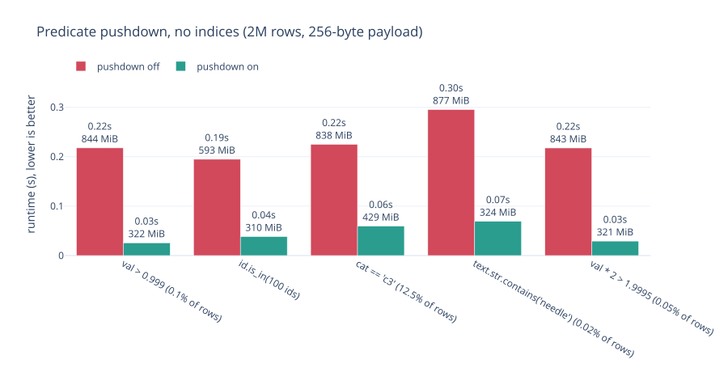
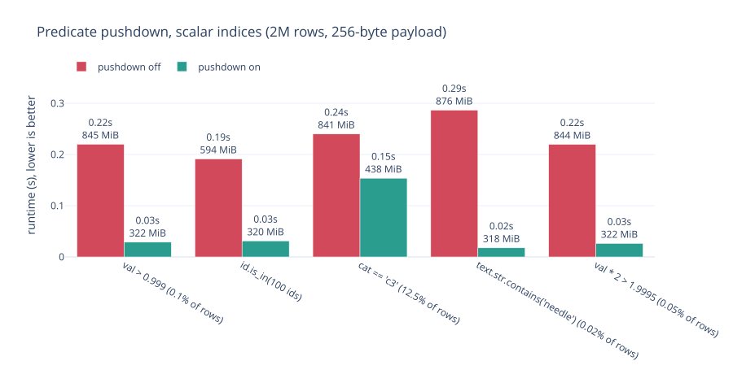

Predicate pushdown¶
When you write scan_lance(...).filter(...), the filter does not have to travel
back to Polars as rows. polars-pylance translates it into Lance SQL, the
filter language LanceDataset.scanner(filter=...) accepts, and hands it to
Lance. Lance then skips pages, consults scalar indices, and never decodes the
columns belonging to rows that cannot survive.
That is predicate pushdown, and it is on by default:
lf = pll.scan_lance("data.lance").filter(pl.col("val") > 0.999)
You can see what any predicate becomes:
>>> pll.to_lance_filter(pl.col("cat").str.starts_with("b") & pl.col("id").is_in([1, 2]))
LanceFilter(sql="(starts_with(`cat`, 'b') AND (`id` IN (1, 2)))", exact=True)
What it is worth¶
Two million rows with a 256-byte payload column, filtering and then projecting
id and payload, each measurement in its own process. The comparison is the
same query with predicate_pushdown=True and predicate_pushdown=False, so
the only thing that changes is where the filter runs.

Without pushdown Polars receives every row and filters them itself, so the payload column is decoded 2 million times and discarded. With pushdown Lance never reads it for rows the filter rejects. Runtime drops by 3-7x and peak memory settles around 320 MiB instead of 840 MiB, because the thing that made the query expensive was reading a wide column, not evaluating the predicate.
Memory is the more durable win. It is roughly flat regardless of how much data the filter rejects, which is what lets a scan of a dataset far larger than RAM finish at all.
What indices add¶
A pushed-down filter is a precondition for a scalar index doing anything: an
index can only help a predicate Lance is allowed to see. With BTREE indices on
id and val, BITMAP on cat and NGRAM on text:

The substring search is the one to look at. Without an index it costs 0.07s,
because Lance still has to examine every text value; with the NGRAM index it
costs 0.02s, roughly 15x faster than not pushing down at all. The index is
doing the work the filter made reachable.
Note the pushdown-off bars barely move between the two charts. Indices do not help a filter Lance never receives.
When it does not pay¶
The cat == 'c3' case gets slower with an index, from 0.06s to 0.15s. The
predicate keeps 12.5% of the table, and a BITMAP lookup that returns a quarter
of a million row ids is more work than simply scanning the column. Indices earn
their place on selective predicates; on broad ones they are overhead.
Pushdown itself has a similar edge. If your projection is narrow, there is no
wide column to avoid reading, and Lance evaluating the predicate row by row can
be slower than Polars evaluating it on an already-decoded column. A
select(pl.len()) over a filter is the shape where this shows up.
Both are data-dependent, and both have a switch:
pll.scan_lance(uri, predicate_pushdown=False) # translate nothing
pll.scan_lance(uri, options=pll.LanceScanOptions(use_scalar_index=False))
Partial translation¶
Not every Polars expression has a Lance SQL equivalent. When part of a predicate does not translate, the translatable part is still pushed and the original is re-applied to each batch in Polars:
>>> pll.to_lance_filter(pl.col("text").str.slice(0, 2) == "xy") is None
True
>>> pll.to_lance_filter((pl.col("id") > 5) & (pl.col("text").str.slice(0, 2) == "xy"))
LanceFilter(sql='(`id` > 5)', exact=False)
exact=False says the filter is a superset: Lance returns more rows than the
predicate keeps, and Polars finishes the job. The answer never depends on how
much of the expression Lance understood, only the speed does.
Dropping a conjunct is only sound in positive position. A dropped branch of an
OR, or anything under a NOT, would produce fewer rows than the predicate
keeps, so those decline entirely rather than lower loosely.
What declines, and why¶
Some constructs have a Lance spelling that means something subtly different. Rather than return wrong rows quickly, these decline and run in Polars:
| construct | why it declines |
|---|---|
round |
Polars breaks ties to even, Lance away from zero |
sqrt, ln, log10, cbrt |
outside their domain Polars gives NaN, Lance NULL |
a ** b, fractional or negative exponent |
same |
str.strip_chars() with no argument |
Polars strips Unicode whitespace, btrim strips spaces |
str.replace(..., literal=True) |
SQL's replace is literal but replaces every occurrence |
str.contains_any(ascii_case_insensitive=True) |
Polars folds ASCII only |
str.to_titlecase |
initcap disagrees on words starting with a digit |
str.slice |
Lance has no substr |
is_in(nulls_equal=True) |
IN propagates NULL |
list.get without null_on_oob |
Polars raises where array_element returns null |
dt.epoch |
date_part('epoch', ...) keeps the fraction |
dt.truncate of a multiple ("2d") |
date_trunc takes a unit, not a window |
// |
Polars floors, SQL truncates |
| narrowing integer cast | Polars raises on overflow, Lance wraps |
| non-strict cast, unless widening | Polars yields null, Lance fails the scan |
Time and Duration literals |
Lance has no matching type |
when/then |
Lance rejects CASE |
Everything else translates, including is_in of any length, xor,
eq_missing, arithmetic, abs, **, min_horizontal / max_horizontal,
fill_null, the is_nan family, cast, the dt parts, list.contains /
len / get, struct.field and concat_str.
Prefilters are stricter¶
A prefilter for a vector search cannot lower loosely, because there is no second pass that could repair the candidate set the search already used. It raises instead of silently becoming a postfilter; see vector search.
Reproducing the numbers¶
uv run --group bench bench/pushdown.py --out bench/plots/static
It builds its own dataset and needs no particular machine: it compares two paths through the same library over the same data, so the ratio holds even where the absolute numbers do not.